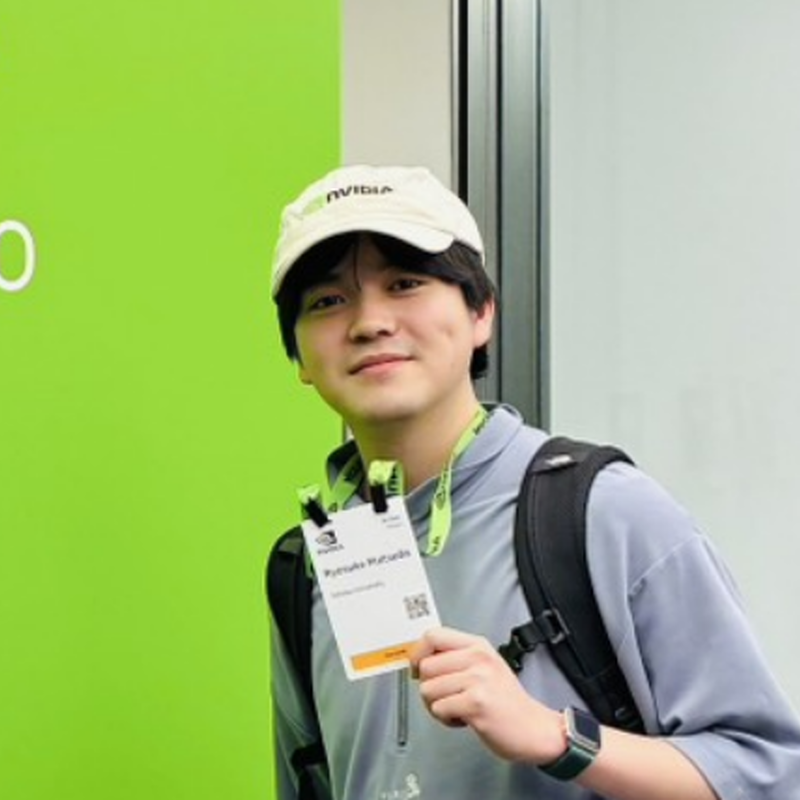
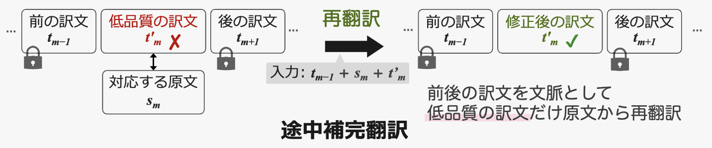
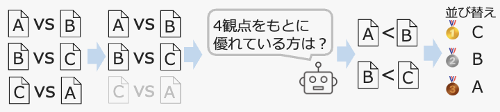
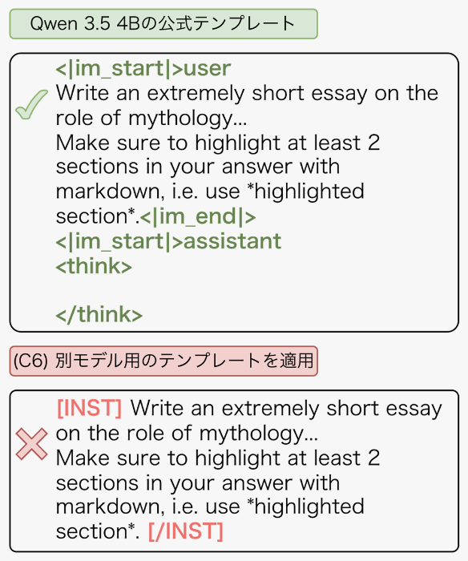
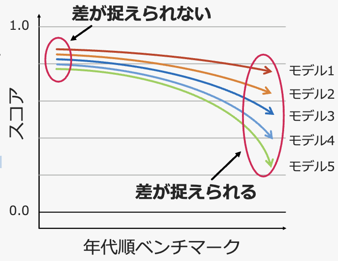
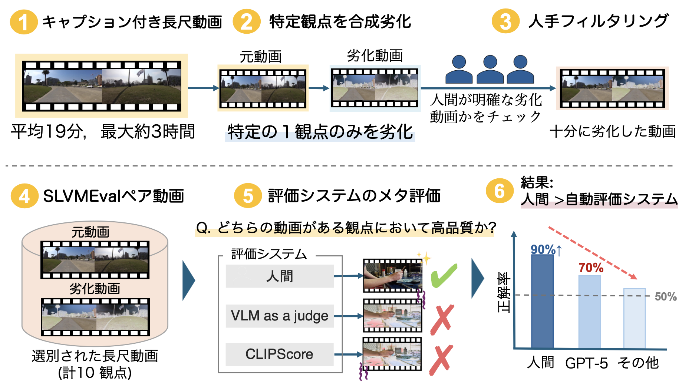
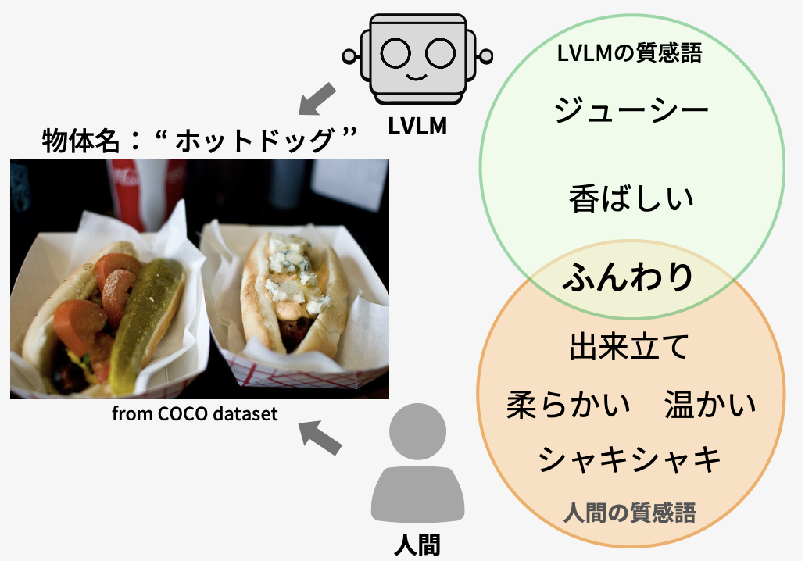
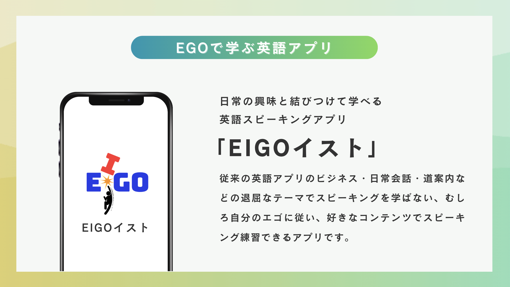

Ryosuke Matsuda 松田 陵佑
M2 · Tohoku University
修士2年 · 東北大学
Hello and welcome! I am a second-year master's student and a member
of the Tohoku NLP Group and
FaiLab. My research interests are mainly in the
area of large visual language models (LVLMs).
Currently, I am working on two research topics:
Shitsukan and T2V models.
東北大学の修士2年で，Tohoku NLP Group
および FaiLab
に所属しています．研究の主な関心は大規模視覚言語モデル（LVLM）です．
現在は 質感知覚 と
Text-to-Video モデル
という2つのテーマに取り組んでいます．
Interests
研究興味
Biography
経歴
2022.04
Tohoku University — Bachelor
東北大学 — 学士
Department of Electrical, Information and Physics
Engineering, School of Engineering
工学部 電気情報物理工学科
2025.04
Tohoku University — Master
東北大学 — 修士
Fundamental Artificial Intelligence, Department of System
Information Sciences, Graduate School of Information
Sciences
情報科学研究科 システム情報科学専攻 鈴木潤研究室
International Conferences
国際会議

[1]
SLVMEval: Synthetic Meta Evaluation Benchmark for
Text-to-Long Video Generation
The IEEE/CVF Conference on Computer Vision and Pattern
Recognition (CVPR 2026), Denver, CO, June 2026.
The IEEE/CVF Conference on Computer Vision and Pattern
Recognition（CVPR 2026）, デンバー, コロラド州, 2026年6月.
Abstract
概要
We introduce SLVMEval, a benchmark for meta-evaluating
text-to-video (T2V) evaluation systems. SLVMEval focuses on
assessing these systems on long videos of up to 10,486
seconds (approximately 3 hours). Our benchmark targets a
fundamental requirement: whether systems can accurately
judge video quality in settings that are easy for humans to
assess. We adopt a pairwise comparison-based meta-evaluation
framework. Building on dense video captioning datasets, we
synthetically degrade source videos to create controlled
"high-quality vs. low-quality" pairs across 10 distinct
aspects. We then use crowdsourcing to filter and retain only
those pairs in which the degradation is clearly perceptible,
thereby establishing the final testbed. Using this testbed,
we assess the reliability of existing evaluation systems in
ranking these pairs. Our experiments show that human
evaluators identify the better long video with 84.7%–96.8%
accuracy, while in 9 of the 10 aspects, the accuracy of
these systems falls short of human judgment, revealing
weaknesses in text-to-long video evaluation.
本研究では，テキストからの動画生成（T2V）の評価システムをメタ評価するためのベンチマーク
SLVMEval を提案する．SLVMEval は，最長 10,486 秒（約 3
時間）に及ぶ長尺動画を対象に評価システムの性能を測ることに焦点を当てる．本ベンチマークは，「人間にとって容易に判断できる設定において，評価システムが動画の品質を正しく判定できるか」という基礎的な要件を対象とする．メタ評価にはペアワイズ比較に基づく枠組みを採用した．詳細動画キャプションデータセットを基に，元動画を合成的に劣化させることで，10
の観点それぞれについて統制された「高品質
vs. 低品質」のペアを作成する．さらにクラウドソーシングにより，劣化が明確に知覚できるペアのみを残すようフィルタリングし，最終的なテストベッドを構築した．このテストベッドを用いて，既存の評価システムがこれらのペアを正しく順位づけできるかという信頼性を検証する．実験の結果，人間の評価者は
84.7%〜96.8%
の正解率でより良い長尺動画を判別できる一方，10 観点中 9
観点で既存システムの正解率は人間の判断に及ばず，長尺動画生成の評価における弱点が明らかになった．
arXiv
arXiv（プレプリント）
[2]
Sumi: Open Uniform Diffusion Language Model from
Scratch
arXiv preprint arXiv:2606.19005, June 2026.
arXiv プレプリント arXiv:2606.19005, 2026年6月.
Abstract
概要
Diffusion models have become a promising alternative to
autoregressive models. Among these, uniform diffusion
language models (UDLMs) permit any token to be updated at
any step, in principle enabling more flexible generation.
However, no UDLM has yet been pretrained from scratch at
both large parameter scale and large token budget. Both
autoregressive modeling and masked diffusion modeling
already have capable models at scale that the community can
study and build on; uniform diffusion has none. A
scratch-pretrained UDLM at scale would provide a clean
reference point for studying scaling behavior, generation
dynamics, controllability, and trade-offs against
established autoregressive and masked diffusion models. To
this end, we introduce Sumi ("ink" in Japanese), a fully
open 7B uniform diffusion language model pretrained from
scratch on 1.5T tokens. Sumi performs competitively with
autoregressive models trained at comparable token budgets on
knowledge, reasoning, and coding benchmarks, while
under-performing on commonsense benchmarks, where our
education-heavy data mixture is a likely contributor. We
release our model weights, checkpoints, and full training
recipe, including a complete specification of the data
mixture over publicly available corpora. We hope this
release enables the community to study native uniform
diffusion at scale and catalyzes work on its as-yet poorly
understood aspects.
拡散モデルは自己回帰モデルの有望な代替手段となりつつある．中でも一様拡散言語モデル（UDLM）は，任意のトークンを任意のステップで更新できるため，原理的にはより柔軟な生成が可能である．しかし，大規模なパラメータ数と大規模なトークン予算の双方を満たす形でスクラッチから事前学習された
UDLM
はこれまで存在しなかった．自己回帰モデリングとマスク拡散モデリングには，コミュニティが研究や開発の土台にできる大規模で高性能なモデルが既に存在する一方，一様拡散には存在しない．大規模にスクラッチ事前学習された
UDLM
は，スケーリング特性，生成ダイナミクス，制御性，および既存の自己回帰モデル・マスク拡散モデルとのトレードオフを研究するための明確な基準点を与える．そこで本研究では，1.5T
トークンでスクラッチから事前学習した完全公開の 7B
一様拡散言語モデル Sumi（日本語の「墨」に由来）を提案する．Sumi
は，同程度のトークン予算で学習された自己回帰モデルと比較して，知識・推論・コーディングの各ベンチマークで遜色ない性能を示す一方，常識推論ベンチマークでは劣っており，教育系に偏った学習データ混合がその一因と考えられる．我々はモデルの重み，チェックポイント，および公開コーパス上のデータ混合の完全な仕様を含む学習レシピ全体を公開する．本公開により，大規模なネイティブ一様拡散モデルの研究が促進され，未解明な側面に関する研究が加速することを期待する．
Domestic Conferences / Symposium
国内会議・シンポジウム

[3]
Constructing a Japanese Document-Level Acceptability
Judgment Dataset and a Fill-in-the-Middle Model for
Machine Translation
機械翻訳タスクにおける日本語文書単位容認性判断データセット構築と途中補完モデル
The 21st Annual Meeting of the Young Researcher
Association for NLP Studies (YANS 2026), Sendai, Miyagi, August 2026.
NLP若手の会 第21回シンポジウム（YANS 2026）, 仙台,
宮城, 2026年8月.
Abstract
概要
This talk gives an overview of the system submitted by team
RFMT to WMT2026, a shared task competing on the performance
of machine translation systems. Our system aims to translate
a given document into Japanese. To build it, we manually
constructed CAJALA, a Japanese document-level acceptability
judgment dataset. CAJALA provides multiple paraphrases for
selected segments in a document and annotates, by hand,
which candidate is relatively more acceptable. We converted
this dataset into parallel document pairs via
back-translation and then applied direct preference
optimization, aiming to improve the naturalness of the
generated translations. In addition, we jointly performed
fill-in-the-middle translation training in order to restore
missing segments in a document, attempting to improve
quality through post-hoc correction of translation errors.
本発表では，機械翻訳システムの性能を競うコンペである WMT2026
に提出したチーム RFMT
のシステムについて概観する．本システムは与えられた文章を日本語に翻訳することを目的としたシステムである．システムの構築にあたり，日本語文書単位容認性判断データセット（CAJALA）を人手で構築した．CAJALA
は，文書中の一部のセグメントに対して複数の言い換えを用意し，その中からどの候補が相対的に容認可能かを人手でアノテーションしたデータセットである．本データセットを逆翻訳によって対訳文書対に変換した後に直接選好最適化学習を実施することで，生成される翻訳文の自然さの向上を狙った．加えて，文書中の欠落したセグメントを復元するため途中補完翻訳学習も同時に実施し，事後的な翻訳誤りの修正を行うことによる品質向上を試みた．

[4]
Comparative Analysis of Likert-Scale and Ranking-Based
Evaluation in LLM-as-a-Judge
LLM-as-a-Judgeにおけるリッカート評価とランキング評価の比較分析
The 21st Annual Meeting of the Young Researcher
Association for NLP Studies (YANS 2026), Sendai, Miyagi, August 2026.
NLP若手の会 第21回シンポジウム（YANS 2026）, 仙台,
宮城, 2026年8月.
Encouragement Award
奨励賞受賞
Abstract
概要
Likert-scale rating is one of the representative evaluation
formats used in evaluation benchmarks. However, because
Likert-scale rating is a graded assessment based on a
predefined scale, it has the drawback that it cannot capture
qualitative differences between outputs that are assigned
the same score. In contrast, ranking-based evaluation, which
compares outputs relatively and orders them, assigns a
unique order to all outputs and may therefore capture
differences that Likert-scale rating cannot distinguish. In
this study, we compare Likert-scale and ranking-based
evaluation by LLM-as-a-Judge, and analyze what
correspondences and discrepancies arise between the two sets
of evaluation results.
評価ベンチマークにおいて，リッカート評価は代表的な評価形式の1つである．しかし，リッカート評価は事前に定義された尺度に基づく段階評価であるため，同一の評価値と判定された出力間の質的な差異を捉えられないという課題がある．一方，相対的に評価して順位づけを行うランキング評価では，全ての出力に一意の順序が与えられるため，リッカート評価では区別できない差異も捉えられる可能性がある．本研究では，LLM-as-a-Judgeによるリッカート評価とランキング評価を比較し，両者の評価結果にどのような対応関係や差異が生じるかを分析する．

[5]
Statistical Analysis of the Impact of Chat Template
Differences on the Performance Evaluation of LLMs
チャットテンプレートの差異がLLMの性能評価に与える影響の統計的分析
The 21st Annual Meeting of the Young Researcher
Association for NLP Studies (YANS 2026), Sendai, Miyagi, August 2026.
NLP若手の会 第21回シンポジウム（YANS 2026）, 仙台,
宮城, 2026年8月.
Abstract
概要
In evaluating the performance of large language models,
various chat templates are used to convert input prompts
into a format that the model can process. If the format of
the chat template is not appropriate, the model may not
produce the responses originally expected of it, and its
performance may not be measured properly. However, the
extent to which such implementation-level differences in
chat templates affect evaluation results has not been
sufficiently clarified. In this study, we apply multiple
chat template conditions to the same model and evaluation
data, and compare the resulting evaluation results. By
statistically analyzing the observed performance gaps and
changes in predictions, we examine the impact that
differences in chat templates have on the performance
evaluation of large language models.
大規模言語モデルの性能評価では，入力プロンプトをモデルが処理可能な形式に変換するために，様々なチャットテンプレートが用いられている．チャットテンプレートの形式が適切でない場合，モデルに本来期待している応答が得られずに，モデル性能を適切に測定できない可能性がある．しかし，このようなチャットテンプレートの実装上の差異が評価結果にどの程度影響するかは，十分に明らかになっていない．本研究では，同一のモデルおよび評価データに対して複数のチャットテンプレート条件を適用し，その評価結果を比較する．得られた性能差や予測結果の変化を統計的に分析することで，チャットテンプレートの差異が大規模言語モデルの性能評価に与える影響について検討する．

[6]
Power Analysis of Performance Differences among Large
Language Models on Evaluation Data from Different
Eras
年代別評価データにおける大規模言語モデルの性能差の検出力分析
The 21st Annual Meeting of the Young Researcher
Association for NLP Studies (YANS 2026), Sendai, Miyagi, August 2026.
NLP若手の会 第21回シンポジウム（YANS 2026）, 仙台,
宮城, 2026年8月.
Abstract
概要
As the performance of large language models improves,
evaluation data has been created with the aim of making
tasks harder and more fine-grained. A likely reason behind
this is that conventional evaluation data can no longer
sufficiently capture differences among high-performing
models. Therefore, when considering the future direction of
evaluation data, it is important to clarify to what extent
existing evaluation data can capture performance differences
among models, and analyses targeting individual evaluation
datasets have been carried out so far. On the other hand,
there have been few attempts to compare evaluation data
created in different eras across the board and to analyze
how their ability to capture performance differences among
models has changed over time. In this study, we therefore
evaluate model performance using evaluation data from
different eras and analyze to what extent each dataset can
discriminate performance differences among models.
Specifically, we apply multiple models to each evaluation
dataset and compare how the trends in model scores and in
score differences between models vary by era.
大規模言語モデルの性能向上に伴い，タスクの高難度化や細分化を目的とした評価データが作成されている．その背景として，従来の評価データでは高性能なモデル間の差を十分に捉えられなくなっていることが考えられる．そのため，今後の評価データの方向性を検討する上では，既存の評価データがモデル間の性能差をどの程度捉えられるのかを明らかにすることが重要であり，これまでに個々の評価データを対象とした分析が行われてきた．一方で，作成年代の異なる評価データを横断的に比較し，モデル間の性能差を捉える能力が時間と共にどのように変化してきたかを分析する試みは十分になされていない．そこで本研究では，年代の異なる評価データを用いてモデルの性能評価を行い，評価データごとにモデル間の性能差をどの程度識別できるのかを分析する．具体的には，複数のモデルを各評価データに適用し，モデルのスコアおよびモデル間のスコア差の傾向が年代によってどのように異なるのかを比較する．

[7]
A Meta-Evaluation Benchmark for Long Video Generation
Tasks
長尺動画生成タスクにおけるメタ評価ベンチマーク
The 32nd Annual Meeting of the Association for Natural
Language Processing (NLP 2026), Utsunomiya, Tochigi, pp.596-601, March 2026.
言語処理学会第32回年次大会（NLP 2026）, 宇都宮, 栃木,
pp.596-601, 2026年3月.
Abstract
概要
We propose SLVMEval, a benchmark for meta-evaluating the
performance of video generation evaluation systems
themselves. SLVMEval consists of synthetically constructed
pairs of high-quality and low-quality videos. These videos
are long, averaging about 19 minutes and reaching up to
about 3 hours. Evaluation systems are scored by the rate
(accuracy) at which they can identify which of a given video
pair is of higher quality. Our experiments reveal that
existing automatic evaluation systems fall short of human
accuracy on 9 of 10 aspects, and that their performance is
particularly poor on aspects related to the consistency
between the prompt and the video.
動画生成モデルの評価システム自体の性能をメタ評価するためのベンチマーク
SLVMEval を提案する．SLVMEval
は合成的に構築された，高品質動画と低品質動画のペアからなる．これらの動画は平均約
19 分，最大約 3
時間の長尺動画となっている．評価システムは，与えられた動画ペアのどちらが高品質であるかを識別できる割合（正解率）によって評価される．実験の結果，既存の自動評価システムは
10 観点中 9
観点で人間の正解率に及ばず，特にプロンプトと動画の一貫性に関する観点で性能が著しく低いことを明らかにした．

[8]
Analysis of Material Perception Capabilities in
Large-Scale Visual Language Models
大規模視覚言語モデルの質感知覚能力の分析
The 31st Annual Meeting of the Association for Natural
Language Processing (NLP 2025), Nagasaki, pp.2550–2555, March 2025.
言語処理学会第31回年次大会（NLP 2025）, 長崎,
pp.2550–2555, 2025年3月.
Abstract
概要
In this study, we focus on "Shitsukan" (material perception)
and investigate the material perception capabilities of
large visual language models (LVLMs), further aiming to
analyze the alignment of material perception between LVLMs
and humans. We first manually collected material-related
words that humans perceive for objects in images. Next,
based on the collected words, we designed a classification
task that evaluates whether LVLMs can select appropriate
material words, and computed the accuracy of both LVLMs and
humans. We also conducted a generation task in which LVLMs
generate material words and humans evaluate their outputs.
Finally, we confirmed that LVLMs with high accuracy on the
classification task also score highly on the generation
task, showing that the classification task may serve as a
simple way to evaluate not only the material perception
capability of LVLMs but also their alignment with human
perception.
本研究では，「質感」に焦点を当て，大規模視覚言語モデル（LVLM）の質感知覚能力を調査し，さらに
LVLM
と人間との間の質感知覚の整合性を分析することを目的とする．はじめに画像内の物体に対して人間が知覚する質感語を人手で収集した．次に，収集した質感語をもとに，LVLM
が適切な質感語を選択できるか評価する分類タスクを設計し，LVLM
と人間の正解率を算出した．また，LVLM
に質感語を生成させ，その出力を人間が評価する生成タスクも実施した．最終的には，分類タスクの正解率が高い
LVLM
は，生成タスクにおいても高いスコアを示すことを確認し，分類タスクが，LVLM
の質感知覚能力の評価だけでなく，人間知覚の整合性まで簡易に評価できる可能性があることを示す．
Activity
活動
Teaching Assistant (TA)
ティーチング・アシスタント（TA）
-
Technical Support · Tohoku University · 2025.04 -
2027.03
教育系情報基盤の利用相談 · 東北大学 · 2025.04 -
2027.03
Provide learning support and ICT consultations at Kawauchi North Campus. 川内北キャンパスにて学習支援および ICT に関する相談対応を行う． -
TIS Lecture · Tohoku University · 2025.10 -
2026.03
TIS寄附講義 · 東北大学 · 2025.10 - 2026.03
TIS Lecture: Practical Lecture of System Integration for AI Era 2025 TIS寄附講義：AI活用時代のシステムインテグレーション技術 -
Practical Python Programming · Tohoku University ·
2025.04 - 2025.08
Pythonプログラミング実習 · 東北大学 · 2025.04 -
2025.08
Practical Python Programming and Application Development Using AI AIを活用したPythonプログラミングの実習と実用アプリ開発
Research Assistant (RA)
リサーチ・アシスタント（RA）
-
LINE Yahoo Corporation · Part-time · 2025.03 -
Present
LINEヤフー株式会社 · アルバイト · 2025.03 - 現在
Research collaboration with LINE Yahoo as RA. RA として LINEヤフーとの共同研究に従事．
Research Fellowship / Scholarship
研究フェローシップ・奨学金
-
Graduate Program in Data Science
東北大学データ科学国際共同大学院（GP-DS）
· 2026-4 -
Present
現在
(Approx. 20%)
（約 20%）
An interdisciplinary integrated data science education program that develops human resources with information utilization capabilities. 情報活用能力を備えた人材を育成する，分野横断・文理融合型のデータ科学教育プログラム．
Awards
受賞

JPHACKS 2024 Awards
JPHACKS 2024 受賞
Tohoku University Early Graduation
東北大学 早期卒業
Graduated Tohoku University (Bachelor) in 3 years!
3年間で東北大学（学士）を卒業！
(5/2402 ≒ 0.21 %)
Skills
スキル